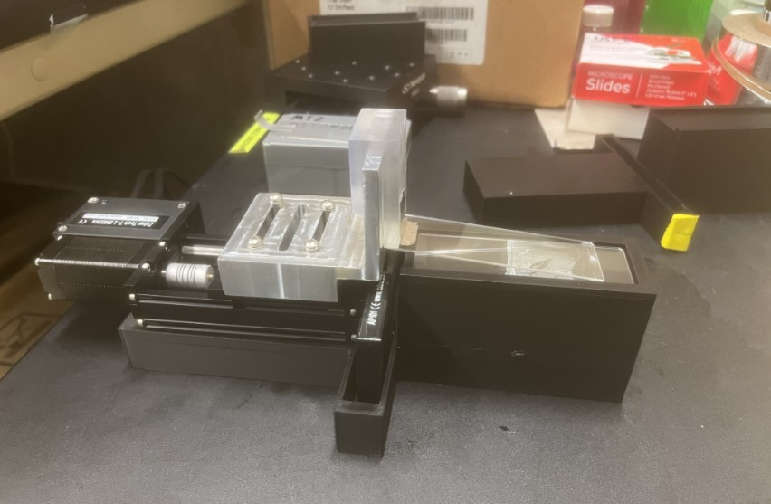
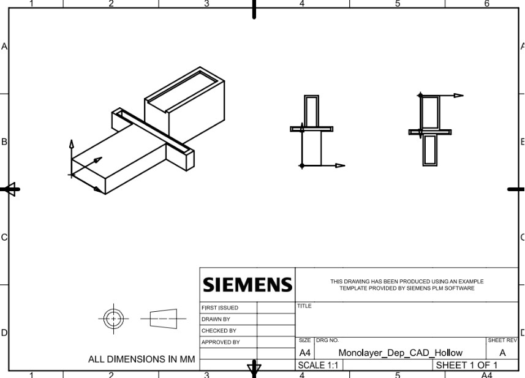
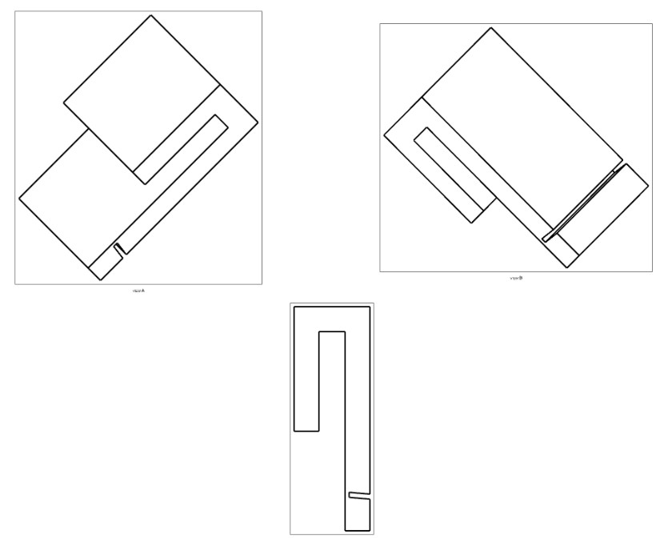

Mechanical Design · Prototyping · Research
Monolayer Deposition System
A custom experimental system designed to improve the repeatability and scalability of microscale particle monolayer deposition.

THE CHALLENGE
Why I built it
My research required large, uniform monolayers of microscale particles for subsequent fabrication and experimental testing. The existing deposition process relied heavily on manual control, making consistency across samples difficult to maintain.
I developed a custom system to better control the motion and positioning of the deposition process. The goal was to create a more repeatable experimental platform while preserving the flexibility needed to test different operating conditions.
The geometry was intentionally kept simple, particularly for the slide hanger, so that components could be rapidly fabricated, tested, and modified as the experimental requirements evolved.
DESIGN
Designing around the deposition process
Initial testing was used to identify the slide angle that produced the most consistent monolayer deposition. That result became the primary design constraint for the system, driving the angle of the slide hanger, the height of the base, and the positioning of the components relative to the motorized linear stage.
The base was designed to mount directly onto the motorized micrometer stage and includes a recessed seat for the deposition slide. The recess improves stability while also limiting evaporation from the slide edges, reducing external flows that can disrupt the capillary forces required for successful particle deposition.


PROTOTYPING
Choosing the right process for each component
The components were fabricated using different additive manufacturing processes based on their functional requirements. The base was produced using conventional FDM printing, which provided sufficient accuracy for mounting and positioning the motorized linear stage.
The slide hanger required tighter dimensional control, particularly at the 1–1.2 mm slide-holding feature. I fabricated the hanger in Clear Resin using a Formlabs Form 3/3+ printer, where the higher resolution was better suited to reliably producing the thin geometry required by the design.